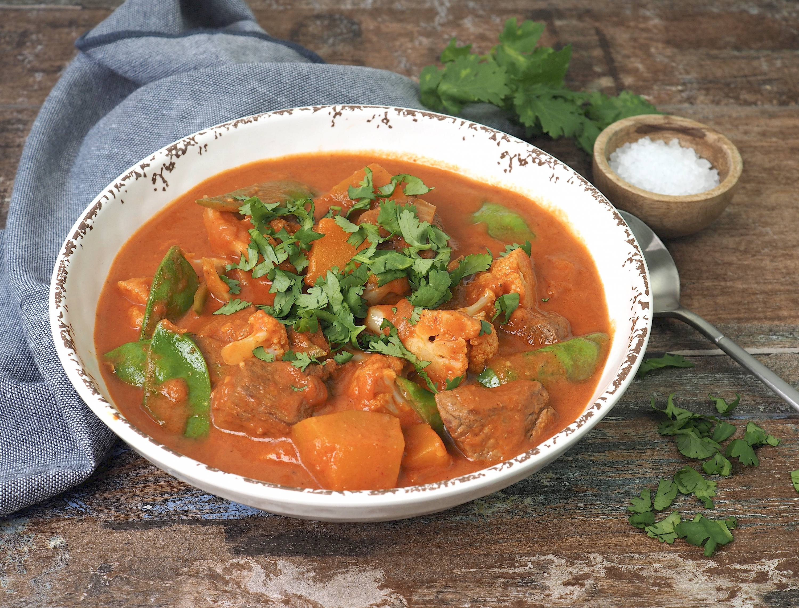

Thai Beef Curry

Description
Delicious red beef curry that you can throw into the slow cooker in the morning and have dinner on the table without much effort.
My kids love this curry and it is not too spicy either. You could also add other vegetables including carrot.
Ingredients
- 1/3 cup / 75g thai red curry past
- 175ml unsweetened coconut milk
- 1/4 cup / 50g brown sugar
- 1 tbsp fish sauce
- 1/3 cup / 75g peanut butter
- 900g chuck steak cut into 2.5cm dice
- 2 potatoes diced
- 125ml beef stock
- fresh basil to garnish
- steamed rice to serve
Steps
- Put the curry paste, coconut milk, sugar, fish sauce and peanut butter into the slow cooker and stir to combine.
- Add the beef, potatoes and stock and stir to coat in the mixture.
- Cover and cook on high for about 4 hours or on low for 8 hours, then set the lid slightly ajar and cook for a further 1 hour or until the beef is very tender and the sauce has thickened slightly.
- Serve immediatley, garnished with basil with the steamed rice.
Home